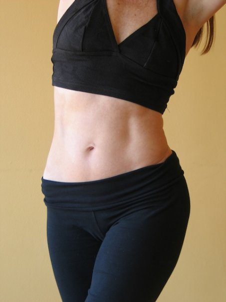

Berkeley, CA 510-912-0358
Berkeley, CA 510-912-0358

My teaching career started at age 9 in an East Bay grammar school when I taught children with learning disabilities to read. In the 6th grade, I was dubbed art director for the school play and taught my classmates how to make masks. At 13, I taught children gymnastics and ballet and at 14, I taught my junior high gymnastics team advanced tumbling. In college, I taught my peers to build a newspaper, we were state champions in Journalism the year of my editor-in-chiefdom. I also had a private business teaching Jazzercise— the eighties!. My first job, as the education manager at a media art center in San Francisco, included teaching people to produce video, to edit, and to write grants. In 1992 I met Madeline Black, now a Pilates Elder. At the time, I was building a career in Videography, teaching mostly. Madeline planted the seeds of inspiration through her attention to details, her knowledge of the body, and through her encouragement and mentorship. She was a task master and committed to teaching anatomy and precision in movement. She offered Pilates as an Art. A few years later, In 2004, I began teaching Pilates in Mill Valley and have been teaching ever since. Yoga teacher training gave me a language for teaching visualizations, appreciation for curiosity, and the words of the mind/body. Sienna Miller taught me to have fun, Abby Tucker taught me to ask, “ Why am I doing this?”, Walt Whitman taught me exaltation, Van Morrison and Gelsy Kirkland offered self expression, from Pema Chodron, I learned to pay attention, from my Dad appreciation of nature and to think for myself, and from Tata Erick Gonzales, acknowledgement of the spirit in all things. I try to bring these things to my teaching because I believe they are all important.

The thing I just happen to have an enormous amount of experience in is movement. After many years in competitive sports, starting with dance roller skating at 5, ice skating at 10, competitive gymnastics, diving, and cross country track, I studied ballet with Bay Area dance masters Alonso King and Maria Veigh. Nature called and I took movement outdoors via wind-surfing, rock climbing, snow boarding and trail running. Most of my movement career has been dedicated to finesse sports and with a 20-year-long yoga practice under my belt, including meditation and spiritual studies, I draw from many traditions, systems and a lot of muscle memory. I have taught many people to do many things and along the way have managed to teach them things they didn’t think they could do. For me personal power comes through physical prowess. Not everyone learns this way but over and over again, I have witnessed how deep understanding of the body empowers the spirit. So I try to give people that kind of control no matter what their primary language or learning modality.

What I am still learning, and will never stop learning, is that teaching, anything, requires attention to emotions and people’s values, their learning styles and senses. Although “movement” can be broken down into sciences such as kinesiology, physical therapies, muscles, bones, and neurology, the Art of Teaching comes from knowing when and how to integrate, “the material” with the science and adapt to a learners experiences. It means paying close attention. Gilbert Highet, in his book the Art of Teaching wrote, “A scientific friendship would be as cold as a chess problem...you must throw your heart into [teaching], you must realize it cannot all be done by formulas, or you will spoil your work, and your pupils and yourself.” There are volumes of scientific information available on movement, muscle activation, muscle recruitment patterns, neurology, biology, kinesiology, and anatomy. I have studied these sciences too, they are necessary for my work. But what I love about teaching and witnessing especially through teaching Pilates, is the infinite diversity in discovering together the magical mind/body connection that is superbly unique for each human being. Noticing how people move, what thoughts and feelings govern their attitudes about their bodies and aptitudes, their approach to movement generally, to exercise, to competition, to working out, to personal development, emotionally and physically, is my work. The possibilities for learning are endless! For this, I am deeply grateful to the people who choose to work with me and who have taught me how to explain a thing or two. It’s a bonus that we are getting fit, staying strong and physically active as we grow older, wiser and profoundly in love with our lives, together!

Cheers and may you always move wisely,
Leanne Aho Lempinen